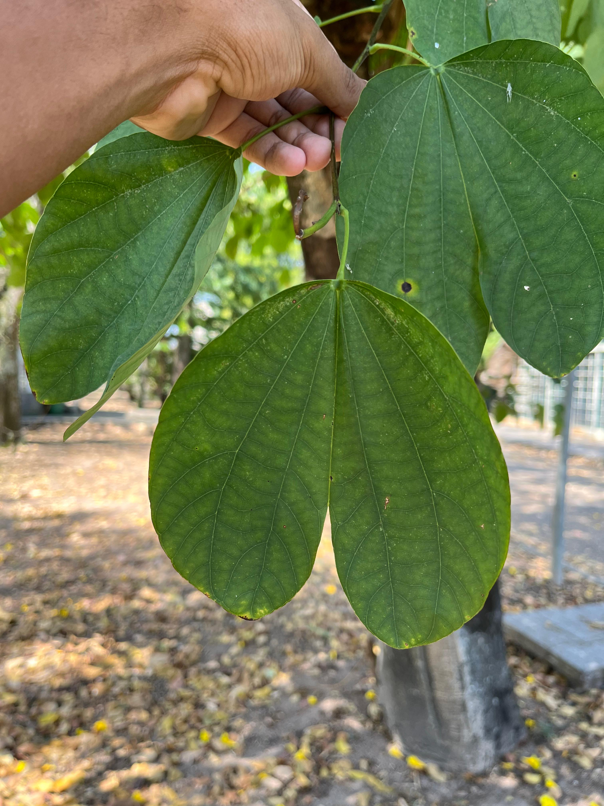

Pata-de-vaca
Bauhinia monandra

Informações Botânicas
Nome Científico:
Bauhinia monandra
Família:
leguminosae caesalpinioideae
Origem:
Burma (Sudeste Asiático)
Descrição:
Árvore de pequeno porte, de 5 a 7 metros de altura, que mantém suas folhas o ano todo (perenifólia). Seu tronco é reto, com casca lisa e a copa é arredondada. Sua característica mais famosa são as folhas, que têm um recorte em 'V' no meio, lembrando o formato de uma pata ou unha de vaca. Da primavera ao verão (outubro a dezembro), a árvore se enche de flores grandes e vistosas de cor rosa, que se assemelham a orquídeas. Seus frutos são vagens lenhosas e achatadas.
Localização no Jardim:
Muito utilizada na arborização urbana de calçadas, praças e jardins, principalmente em regiões de clima mais quente. Fica ótima plantada de forma isolada, como destaque, ou em pequenos grupos.
Características Especiais:
- Folha em Forma de Pata Seu nome popular vem do formato único de suas folhas, que parecem o casco de uma vaca.
- Flores que Lembram Orquídeas Suas flores são grandes, rosadas e com cinco pétalas desiguais, conferindo uma aparência exótica parecida com a de uma orquídea.
- Floração Abundante Produz uma floração exuberante e muito ornamental, que se destaca na paisagem.
- Atrai Polinizadores Suas flores vistosas são um grande atrativo para abelhas e borboletas.